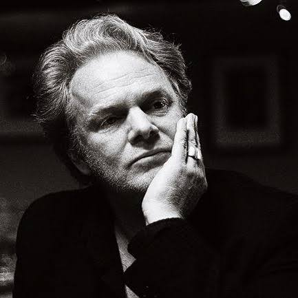

Om oss

Den Brune Løype er inspirert av en artikkel av forfatter og journalist Torgrim Eggen i DNs D2-magasin, der han vandrer en "brun løype" gjennom Københavns tradisjonelle brune barer i jakten på byens sjel. Vi har tatt med oss ideen og laget en digital guide, slik at du enkelt kan legge ut på din egen brune løype rundt om i byen.
Kilde: Torgrim Eggen, «Torgrim Eggen går brun løype i jakten på Københavns sjel», DN/D2 (bak betalingsmur).